5.1 Correction et mise à jour de données avec JOSM
Cette rubrique présente:
- Un aperçu des outils de mise à jour des données dans JOSM
- Instructions à suivre étape par étape pour importer des données de terrain dans JOSM
- Instructions à suivre étape par étape pour la correction des données avec JOSM
Les supports suivants sont conçus pour aider les gestionnaires de projet et autres personnes animateurs de formations et d'ateliers. Cependant, ce manuel convient également aux personnes intéressées à apprendre comment nettoyer et télécharger des données de terrain dans JOSM.
Aperçu
Les données recueillies sur le terrain doivent toujours être nettoyées et corrigées en se servant des données OSM existantes avant tout transfert dans la base OSM. Il existe de nombreux outils d’édition de données OSM, mais dans cette rubrique, nous utiliserons JOSM. Ce logiciel dispose de beaucoup d'outils et de plugins utiles, ce qui rend la cartographie OSM beaucoup plus facile, mais surtout, c'est l'outil le plus facile et le meilleur pour maintenir la qualité des données OSM tout en important une grande quantité de données.

Outils JOSM de nettoyage et mise à jour de données
Il y a des outils intégrés dans JOSM, ainsi que des plugins supplémentaires qui peuvent aider au contrôle de la qualité des données pendant le processus de transfert de données dans la base OSM.
- Filtre est un outil intégré qui vous permet de désactiver, masquer, sélectionner et mettre en évidence des groupes spécifiques d'objets en fonction de paramètres personnalisés. Cet outil vous aidera à repérer et à éviter les erreurs courantes et à examiner les données.
- L’Outil de Validation est un autre outil intégré qui permet d'examiner et de rechercher les erreurs courantes et de d’avertir de la présence de données potentiellement erronée.
- Le greffon Todo List permet aux utilisateurs d'examiner systématiquement les données qui doivent être téléchargées et de suivre l'avancement des travaux de nettoyage des données. Le greffon “ToDo List” doit être téléchargé avant de pouvoir être utilisé. Visitez la page pour apprendre comment installer les greffons dans JOSM, puis téléchargez le greffon “ToDo List”.
Outils et supports de formation
Cette section présente une sélection de ressources destinées aux gestionnaires de projets, aux formateurs ou même aux autodidactes sur le(s) sujet(s) décrit(s) ci-dessus.
 La rubrique suivante est conçue pour servir de matériel d’apprentissage qui peut être utilisé à la fois pendant les formations et par les autodidactes.
La rubrique suivante est conçue pour servir de matériel d’apprentissage qui peut être utilisé à la fois pendant les formations et par les autodidactes.
Ajout de données collectées dans JOSM
À la suite d'une activité de collecte de données sur le terrain, à l'aide de JOSM, utilisez les étapes suivante pour nettoyer et transférer les données dans la base OSM. En suivant ces étapes, vous serez capable de:
- Installer le greffon Utilsplugin2
- Regrouper toutes les données collectées
- Enregistrer le fichier.osm en utilisant JOSM
- Téléchargement des données OSM
- Ajout d'une couche d'imagerie satellite sur JOSM
- Ajout et modification des données OSM à l'aide de JOSM
- Transférer les modifications dans l'OSM
- Voir les résultats de modification des données OSM sur le site web de OSM
Compétences et moyens techniques nécessaires
- Ordinateur
- Connexion Internet
- JOSM installé
- Connaissances de base sur JOSM
- Données collectée sur le terrain
1. Installation du greffon Utilsplugin2
Avant d'ajouter ou d'éditer des données OSM en utilisant JOSM, installez le plugin que vous utiliserez en premier. JOSM possède un plugin appelé utilsplugin2 dont l'une des fonctions est de faciliter l’ajout de preset/tag. Pour utiliser ce greffon, vous devez d'abord l’installer car il n'est pas installé par défaut. Voici les étapes pour installer utilsplugin2:
- Ouvrez JOSM
- Cliquer sur le menu Edition → Preferences
- Select menu Greffons pour installer un nouveau greffon. Si vous n'avez pas encore téléchargé les greffons disponibles, cliquez d'abord sur Télécharger la liste de greffons disponile pour la télécharger. Assurez-vous d'être connecté à Internet.
- Après avoir téléchargé la liste des greffons, recherchez utlisplugin2 en le tapant dans le champ de recherche. Après l'avoir trouvé, cochez la case à côté de utilsplugin2.

- Cliquez sur OK et attendez que le processus d'installation soit terminé. Si le greffon a été installé avec succès, il y aura un menu Plus d'outils sur votre JOSM.
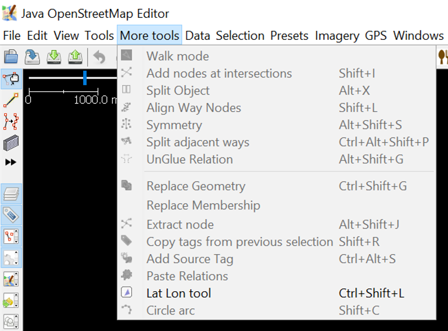
Remarque: Parfois, JOSM vous demande de redémarrer JOSM après avoir installé un nouveau greffon pour appliquer les greffons nouvellement installés. Cependant, tous les greffons nouvellement installés n'ont pas besoin de redémarrer JOSM pour être utilisés une fois le processus d'installation terminé.
2. Importation des données de terrain
2.1 Fusion des données collectées avec l’application OMK *Remarque: si vos données sont dans un format différent, passez à l’étape b. L’importation de données de collecte (hors données collectées avec OMK).
Si vous avez réalisé une collecte de données avec des outils de collecte comme ODK Collect et OpenMapKit, vous pouvez utiliser ces données comme référence pour ajouter les informations sur des objets lors de la cartographie dans OSM. Les données collectées avec OpenMapKit sont au format .osm. Le nombre de fichiers.osm provenant de OpenMapKit sera le même que le nombre total d’objets collectés, puisque chaque objet est enregistré comme un fichier. Fusionnez tous les fichiers.osm pour faciliter l'utilisation des données collecté comme référence cartographique, on peut le faire en suivant les étapes suivantes:
- Allez dans l'Explorateur de fichiers où vous avez enregistrez le fichier.osm depuis ODK Collect et OMK.
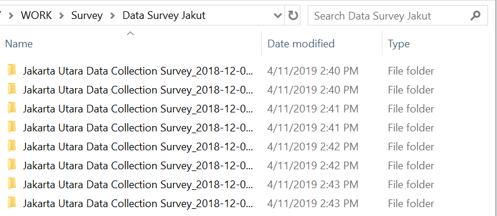
- Recherchez tous les fichiers.osm en tapant “osm” dans la boîte de recherche. Sélectionnez tous les fichiers.osm dans les résultats de recherche.
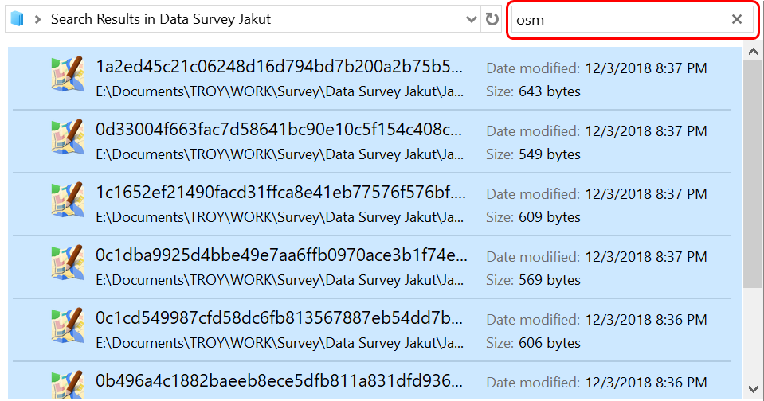
- Faites glisser tous les fichiers.osm sélectionnés vers JOSM.

- Sélectionnez toutes ces couches .osm en sélectionnant la couche la plus haute .osm, puis en appuyant sur Shift et en sélectionnant la couche la plus basse .osm.
- Faites un clic droit sur l'un des couches .osm, puis cliquez sur Fusionner. Une fois que vous avez sélectionné la couche cible, la fenêtre sélection de couche apparaît, vous n'avez pas besoin de changer la couche cible, cliquez sur Fusionner.
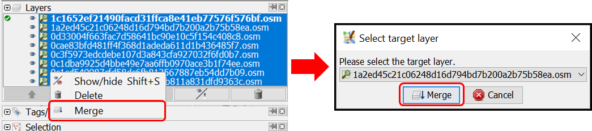
- Sauvegardez la couche fusionnée et changez son nom en cliquant avec le bouton droit de la souris sur la couche fusionnée, sélectionnez Enregistrer sous, changez le nom de la couche, puis cliquez sur Enregistrer.
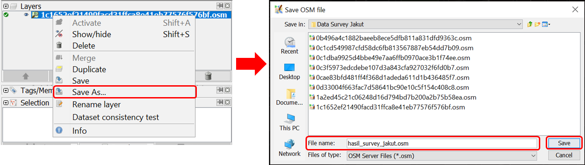
- JOSM fournit un plugin nommé todo pour vous aider à marquer l'objet mappé ou non mappé de la couche de données d'enquête fusionnée. Si vous avez déjà installé le greffon todo et activé sa fenêtre, sélectionnez tous les nœuds d'objets dans la couche fusionnée en cliquant sur l'icône Select object, puis cliquez sur Add sur la fenêtre Todo list.
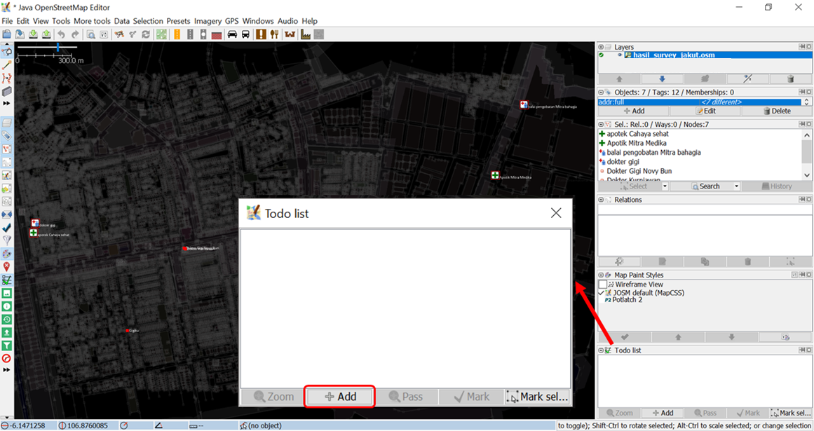
2.2 Importing Survey Data (non-OSM)
Vous devrez convertir vos données dans un fichier.geojson,.shapefile ou.osm avant de commencer le nettoyage des données. Nous vous recommandons de fusionner et de convertir les fichiers dans. QGIS, puis d'ouvrir le fichier fusionné dans JOSM.
3. Téléchargement des données OSM
Après avoir fusionné avec succès toutes les données collectées, vous devez télécharger les données OSM existantes. Le téléchargement des données OSM a pour but de découvrir quels objets ont déjà été mappés et quels objets ne l'ont pas déjà été sur OSM. Voici les étapes pour télécharger les données OSM à l'aide de JOSM:
- Cliquez sur le menu Fichier → Télécharger les données
- La fenêtre de téléchargement apparaîtra. Il vous montrera l'onglet Carte glissante par défaut.
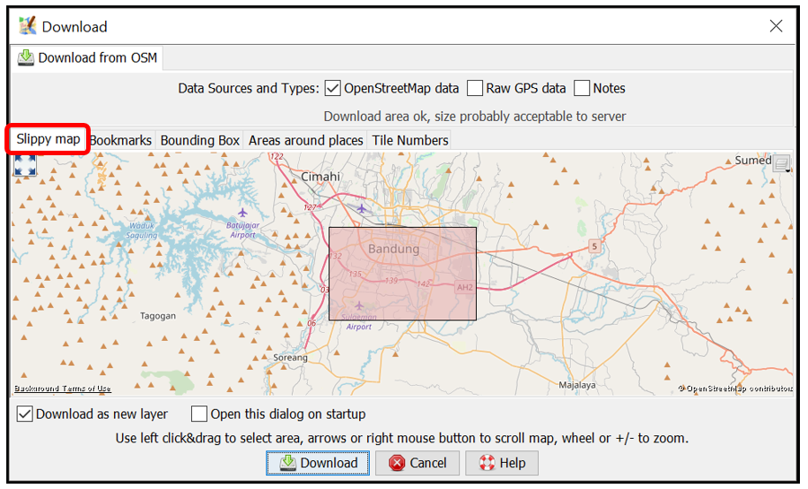
-
Si la carte n'affiche pas votre zone cartographique, faites glisser la carte en cliquant avec le bouton droit de la souris et en la maintenant enfoncée, puis faites glisser la carte vers votre zone cartographique. Dessinez une zone dans votre zone cartographique en cliquant avec le bouton gauche de la souris et en la maintenant enfoncée, puis déplacez la souris jusqu'à ce qu'une zone rose couvre la totalité de la zone cartographique. Cliquez ensuite sur Télécharger.
-
S'il est assez difficile de trouver votre zone cartographique en faisant glisser la carte, vous pouvez cliquer sur l'onglet Rechercher un lieu et taper le nom de votre zone cartographique dans la zone Entrez un nom de lieu à rechercher puis cliquer sur Rechercher. Le résultat de la recherche vous montrera les noms de votre zone cartographique. Cliquez sur l'un des noms puis retournez à l'onglet Carte glissante. La carte sur l'onglet Carte glissante sera dirigée vers votre zone cartographique. Dessinez une boîte couvrant toute votre zone de cartographie, puis cliquez sur Télécharger.
Remarque: Ne vous préoccupez pas de la quantité de données OSM existantes dans votre zone cartographique. S'il y a déjà beaucoup de données existantes, vous devrez les télécharger séparément car JOSM ne peut pas télécharger une énorme quantité de données à la fois.
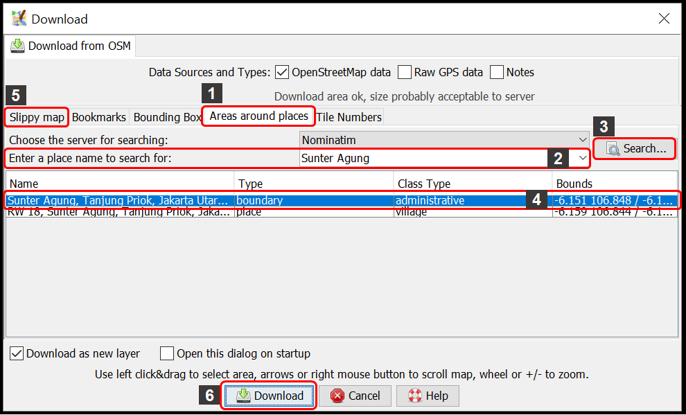
- Après avoir téléchargé les données OSM dans votre zone de Mapping, il y aura un nouveau calque dans la Fenêtre des calques qui sera également votre calque d'édition pour ajouter ou modifier les données OSM. Veillez à n'ajouter ou modifier des données que dans la zone claire et non dans la zone ombragée. La zone ombragée n'est pas votre zone de téléchargement. Et assurez-vous que toute votre zone de travail est déjà téléchargée. Après avoir téléchargé les données OSM, JOSM ressemblera à ceci:
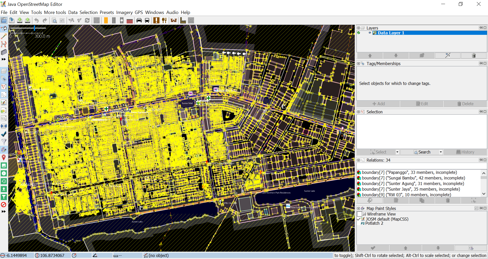
- Si vous avez déjà téléchargé des données OSM dans toute votre zone, fusionnez votre couche de données OSM téléchargées avec votre couche de données d'enquête. Sélectionnez ces deux couches puis cliquez avec le bouton droit de la souris, sélectionnez Fusionner. Sauvegardez sur votre couche de données collectées. Cliquez ensuite sur Fusionner.
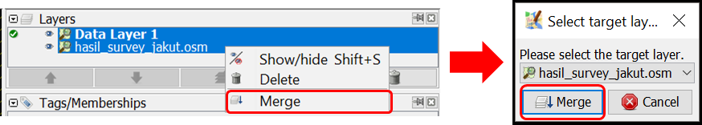
4. Ajout d'images satellites
- Add satellite imagery as another reference for mapping by clicking menu Imagerie → choisissez l'une des images disponibles que vous souhaitez utiliser, telle que DigitalGlobe Premium Imagery. Après avoir ajouté avec succès l'imagerie satellite, il est temps d'ajouter les données OSM. JOSM ressemblera à ceci:
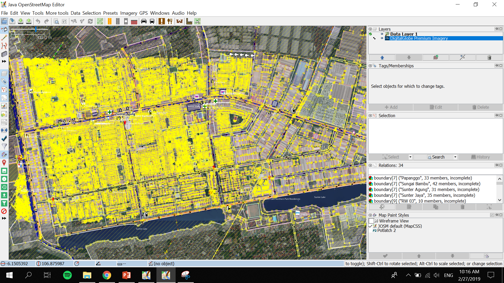
- Vous pouvez ajuster l'affichage de l'imagerie satellite. Sélectionnez la couche d'imagerie satellite, puis cliquez sur l'icône Changer la visibilité de la couche sélectionnée et ajustez son affichage en faisant glisser le bouton bleu vers la gauche ou la droite.

- Si vous utilisez DigitalGlobe Premium Imagery comme référence, il y a parfois deux versions d'affichage lorsque vous faites un zoom avant ou arrière. Habituellement, il n'y a qu'une seule version d'affichage alignée avec les données OSM existantes. Désactiver la fonction de zoom automatique pour que l'affichage de l'image satellite ne change pas lorsque vous l'agrandissez ou la réduisez. Pour désactiver la fonction de zoom automatique, cliquez avec le bouton droit de la souris sur l'affichage de l'image satellite → Cliquez sur Zoom automatique pour que la case à côté de Zoom automatique soit décochée.

5. Edition des données OSM à l'aide de JOSM
Vous êtes maintenant prêt à ajouter ou à modifier des données OSM à l'aide de JOSM. Vous pouvez dessiner de nouveaux objets ou modifier les objets existants à l'aide des outils mentionnés dans Utilisation du module JOSM. Voici les étapes à suivre pour ajouter ou modifier des données OSM à l'aide des données collectées, des données OSM téléchargées et des images satellite que vous avez déjà ajoutées dans JOSM:
- Après avoir suivi avec succès les étapes mentionnées dans les sections précédentes, il y aura deux couches sur votre JOSM : la couche d'imagerie satellite (dans l'image ci-dessous, la couche signifiée est DigitalGlobe Premium Imagery) et les données collectées fusionnées avec la couche de données OSM téléchargées (dans l'image ci-dessous, cette couche à pour nom hasil_survey_jakut.osm ). Il ressemblera à ceci:
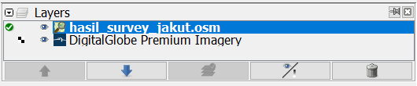
- Vous pouvez utiliser la fonction Filtre de JOSM pour ne pas modifier accidentellement d'autres objets tels que les limites administratives. Les limites administratives dans OSM sont des objets délicats, donc s'il y a déjà des limites administratives sur votre zone cartographique, il est préférable d'utiliser la fonction Filtre. Pour utiliser cette fonction de filtrage, activez la fonction Filtrer les fenêtres en cliquant sur le menu Fenêtres → Filtrez. Il y aura une fenêtre filtre dans le panneau de droite. Cliquez sur Ajouter dans la fenêtre Filtre, tapez boundary=administrative dans la zone Critères du filtre et cliquez sur Appliquer le filtre. Un nouveau filtre apparaîtra pour les limites administratives. Pour désactiver le filtre, il suffit de décocher la case située à gauche du filtre. Vous pouvez en savoir plus sur la fonction Filtre de JOSM dans le module Fenêtre de filtre sur JOSM.
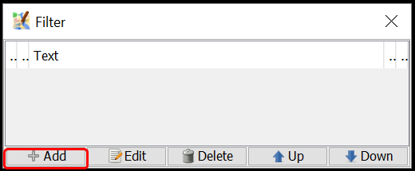


- Commencez à mapper en faisant un zoom avant sur un objet, sélectionnez un objet dans la liste todo list de, puis cliquez sur Zoom. Après avoir sélectionné et agrandi un objet, vous pouvez copier les attributs de l'objet sélectionné vers les objets OSM téléchargés. Sélectionnez l'objet OSM téléchargé qui correspond à l'objet collecté, puis cliquez sur le menu Plus d’outils → Copiez les attributs de la sélection précédente ou appuyez sur Shift + R sur votre clavier. Assurez-vous d'avoir sélectionné l'objet de sondage correspondant avant de copier ses attributs de l'objet OSM téléchargé. Assurez-vous également que les attributs copiées sont conformes aux règles de mapping OSM et adaptés au type d'objet. Par exemple, dans l'image ci-dessous, une clinique située dans un complexe sanitaire , cartographiée comme un point et ayant seulement des attributs appropriés pour un objet point. Bien que les attributs relatifs au bâtiment aient été ajoutés au bâtiment des complexes sanitaires où se trouve la clinique. Lorsque vous avez terminé de copier les attributs d'un objet, cliquez sur Marquer pour identifier qu'il est déjà mappé sur OSM. Répétez l'opération jusqu'à ce que tous les objets mappés sur OSM.

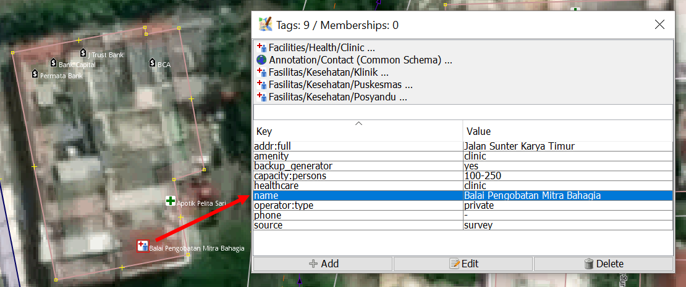
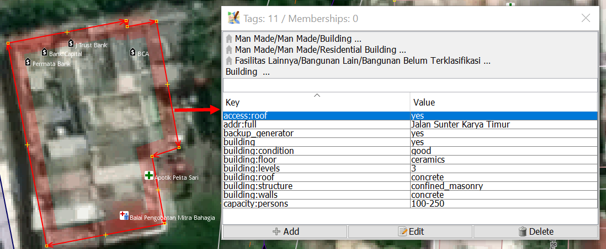
- Example given above is for point object. When you find an object that is supposed to map as a polygon, such as school complex which has more than one building inside, how to map it on OSM? Select the school object in the Todo list Windows and then click Zoom. Select the point object on the map. Copy the tag to the building polygon aligned with the point object by selecting the building polygon and then clicking menu More tools → Copy tags from previous selection or pressing Shift + R on keyboard. After copying the tags, delete tags that are not related to building and left only building related tags. Draw a polygon covering all school area using Draw nodes, then copy tags that are suitable for school area (tags that you deleted before in the building polygon) like amenity, name and addr:full. After that, delete the school point from the survey data since it has just been mapped as a school area polygon.

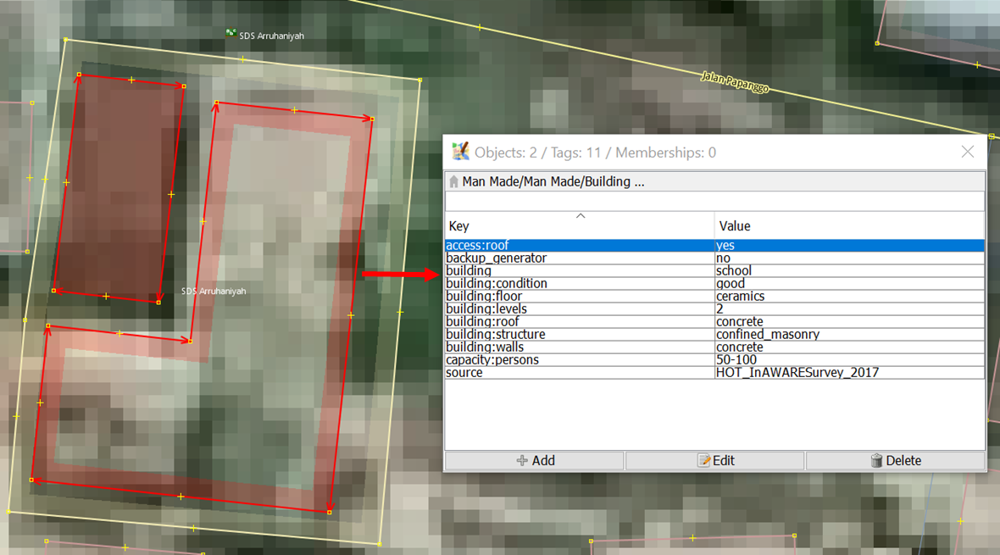
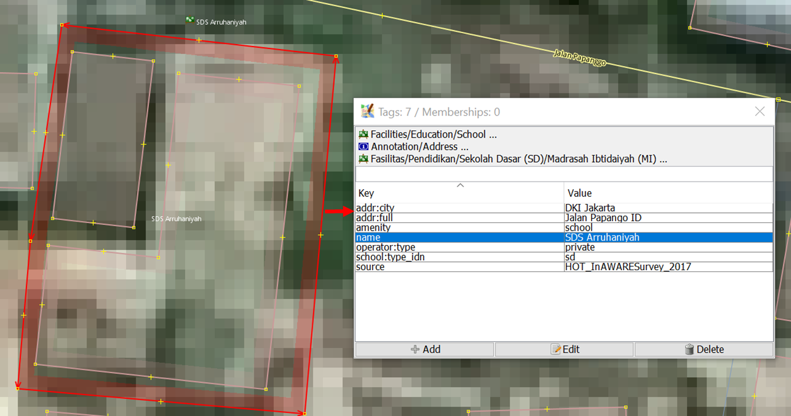
6. Enregistrement des modifications
- Si vous avez déjà fait du mapping à l'aide de JOSM, enregistrez les modifications apportées au serveur OSM car les nouveaux objets ajoutés ne sont enregistrés que dans votre ordinateur. Pour enregistrer les modifications que vous avez apportées, cliquez sur le menu Fichier → Mettre en ligne les données
- Si vous rencontrez un avertissement ou une erreur après avoir cliqué sur Mettre en ligne les données, il est préférable de corriger l'avertissement ou l'erreur avant de continuer. Pour en savoir plus sur la correction des avertissements/erreurs et des avertissements/erreurs courants, reportez-vous au module Validation des données d'enquête à l'aide de JOSM. Cependant, si vous n'avez pas le temps d'apprendre à réparer les avertissements/erreurs, vous pouvez simplement continuer et cliquer sur Continuer le transfert. La fenêtre de téléchargement apparaîtra.
- S'il n'y a pas d'avertissement ou d'erreur, la fenêtre de téléchargement s'affiche. Dans la fenêtre de téléchargement, tapez un bref commentaire pour les modifications que vous avez apportées dans la zone de commentaires et indiquez la ou les sources dans la zone de source. Tapez le nom de l'image satellite et du mode de collecte dans la case source. Si vous voulez que d'autres contributeurs examinent vos modifications, cochez la case J'aimerais que quelqu'un examine mes modifications. Cliquez ensuite sur Envoyer les modifications.

Remarque: Vous devez télécharger périodiquement vos modifications lors de la mise en correspondance de sorte qu'il n'y ait pas un grand nombre de modifications à envoyer. Plus il y a d'éditions que vous voulez envoyer, plus il faut de temps pour les envoyer. Si vous avez déjà effectué un grand nombre de modifications et que vous n'avez pas effectué de téléchargement, vous pouvez le télécharger par bloc. Vous pouvez le faire en cliquant sur l'onglet Paramètre Avancé et en sélectionnant Envoyer en plusieurs bloc dans la fenêtre Télécharger. Tapez la taille du bloc avec le nombre de changements que vous voulez envoyer par bloc, par exemple 500. Ceci peut être fait pour éviter un téléchargement incomplet, en particulier lorsque votre connexion Internet est instable et qu'il en résulte un doublon d'objet.
7. Enregistrement du fichier.osm
- Vous pouvez également enregistrer votre calque d'édition en faisant un clic droit sur votre calque d'édition et en cliquant sur Enregistrer. La fenêtre d'enregistrement du fichier OSM ci-dessous apparaîtra. Saisissez le nom de votre fichier, puis cliquez sur Enregistrer. Votre fichier sera enregistré au format.osm.
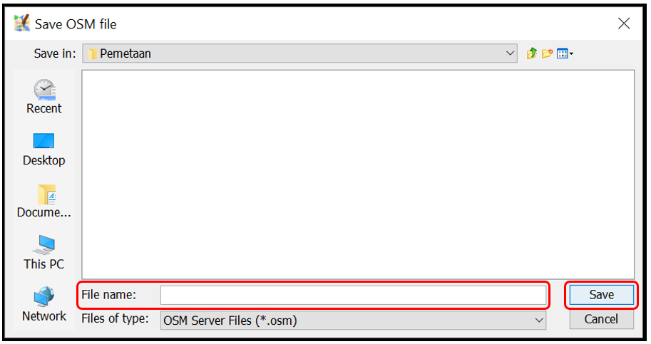
Remarque: Si vous n'avez pas fini de cartographier votre zone et que vous voulez continuer à la cartographier plus tard, vous pouvez enregistrer votre travail comme fichier.osm puis continuer à la cartographier ultérieurement. Vous pouvez ouvrir votre fichier.osm enregistré en cliquant sur le menu Fichier → Ouvrir, choisissez le fichier que vous voulez ouvrir et cliquez sur Ouvrir. Après l'avoir ouvert, mettez d'abord à jour les données de l'OSM en cliquant sur le menu Fichier → Mettre à jour les données et vous pouvez vous y remettre pour continuer la cartographie.
8. Affichage des changements apportés à la carte
- Vous pouvez voir vos modifications en les vérifiant sur le site OSM Gardez à l'esprit que les nouveaux changements peuvent apparaître quelque temps après leur envoi sur le serveur OSM.

RÉSUMÉ
Si vous pouvez appliquer et suivre toutes les étapes mentionnées dans ce module, vous pouvez alors effectuer le processus de cartographie OSM avec le logiciel JOSM. Vous pouvez effectuer des processus de cartographie OSM, tels que télécharger des données OSM, ajouter des images satellites, éditer des données OSM, télécharger des modifications, enregistrer des données OSM dans un fichier.osm et visualiser des modifications. Vous pouvez télécharger vos modifications périodiquement, par exemple par région ou par village. Si vous avez déjà terminé une collecte de données dans une région ou dans un village, vous pouvez le transférer directement dans la base OSM. De cette façon, les données de votre collecte ne seront pas emmagasinées et d'autres personnes pourront procéder à la validation des données.